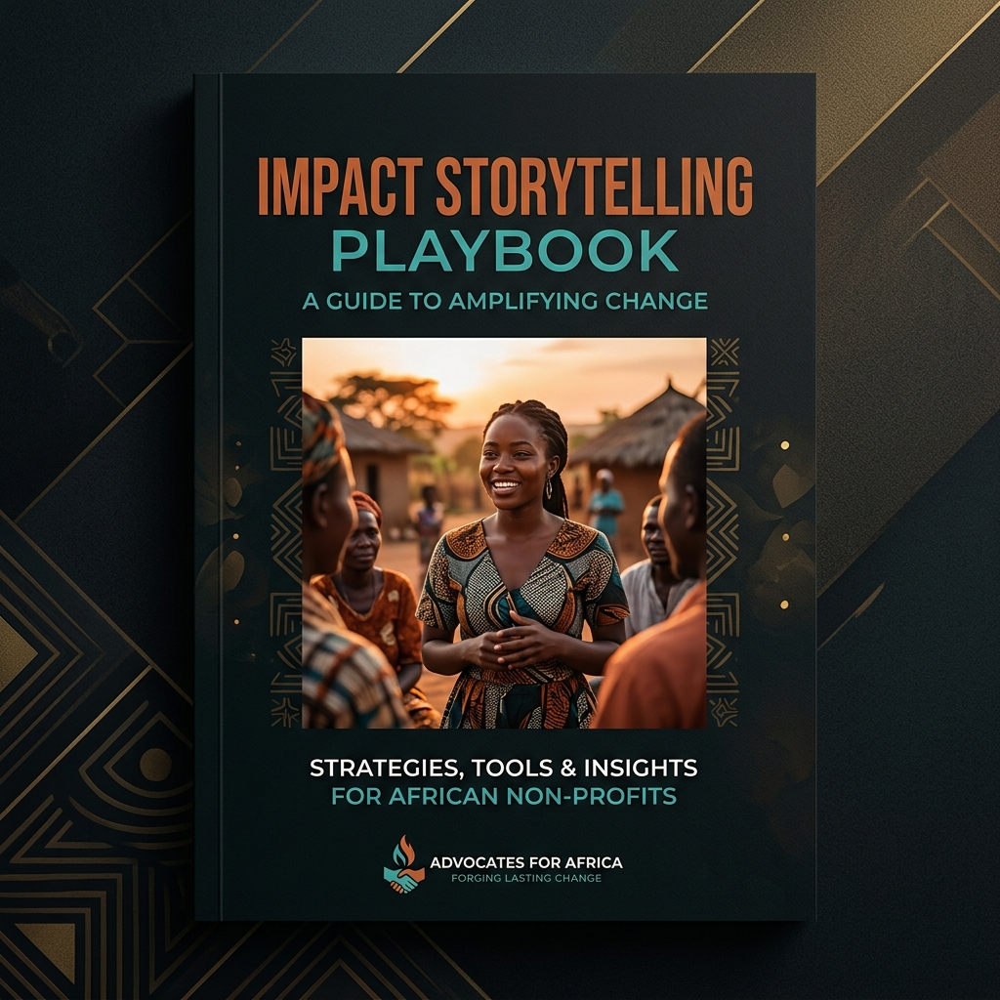
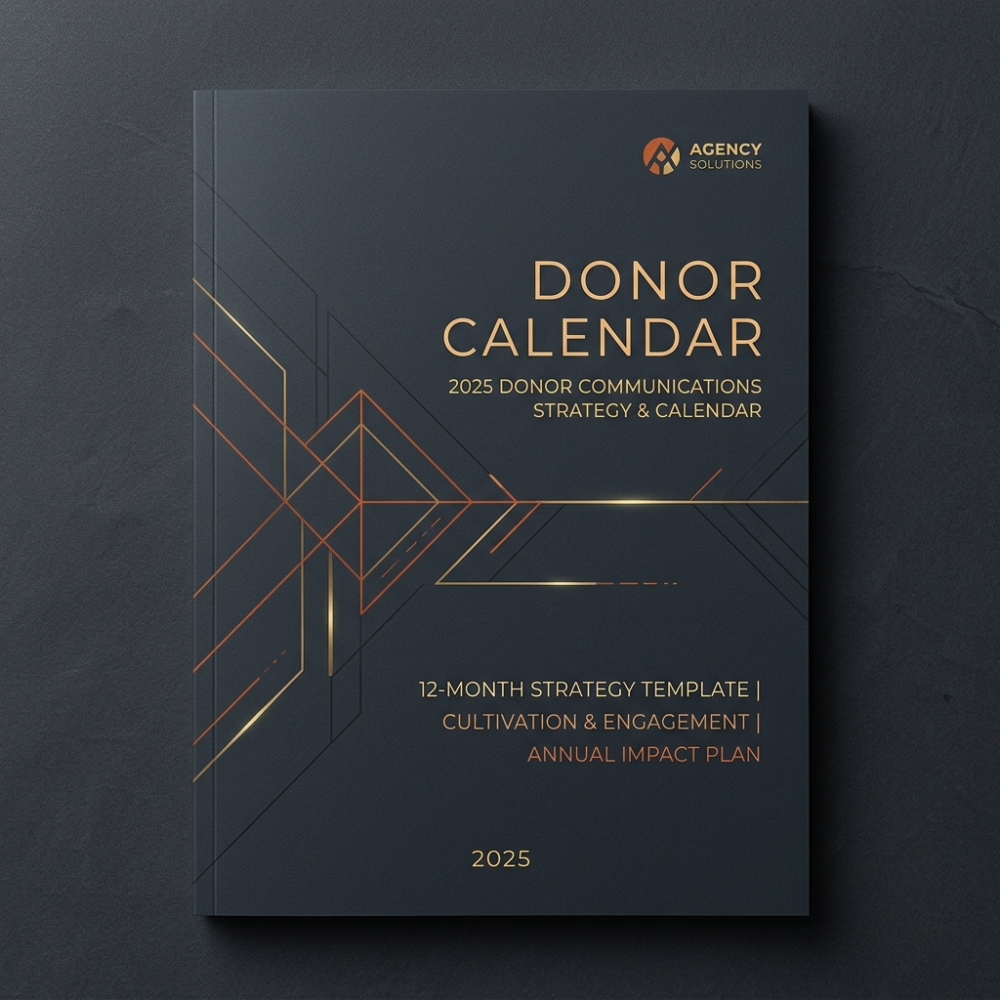
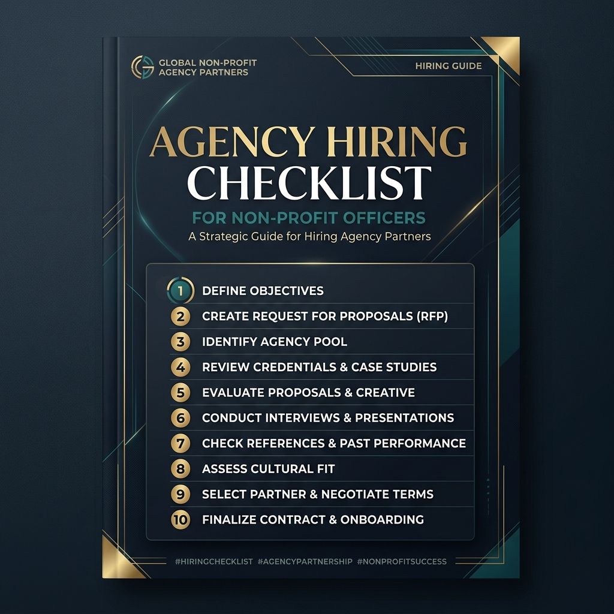
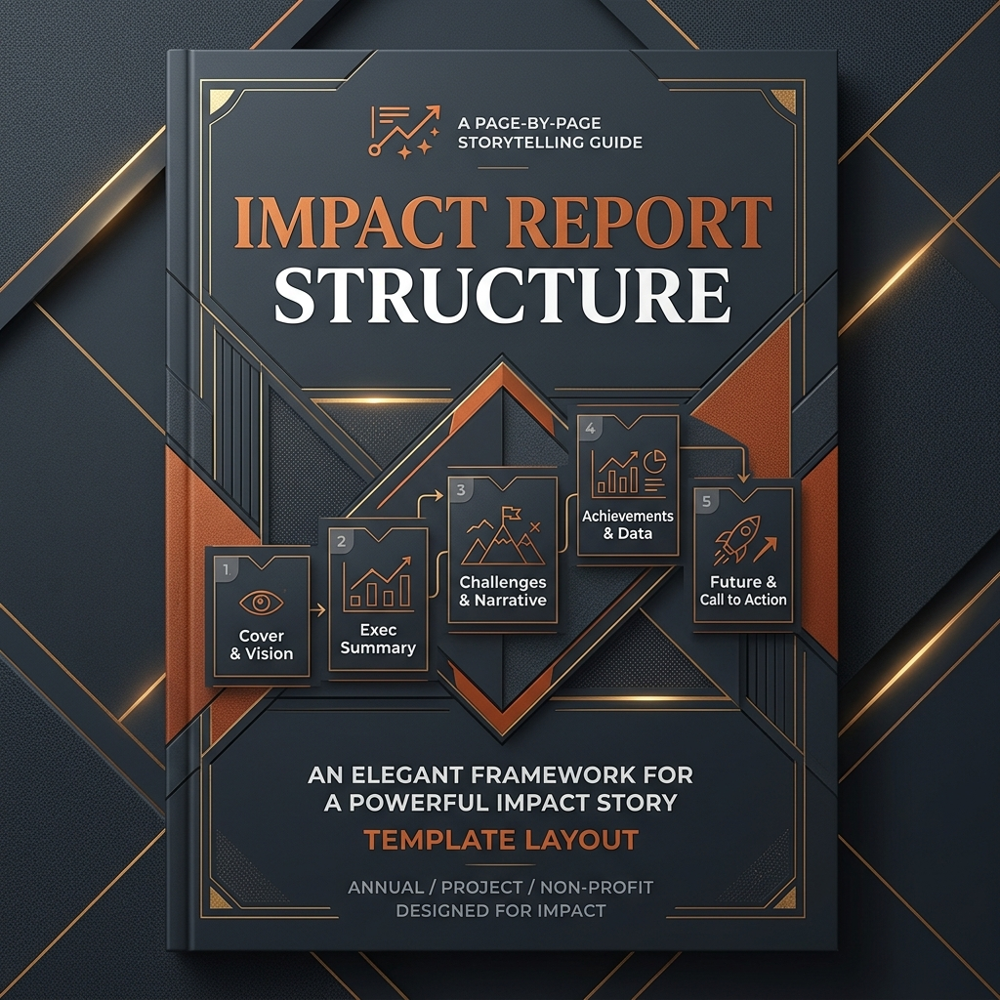
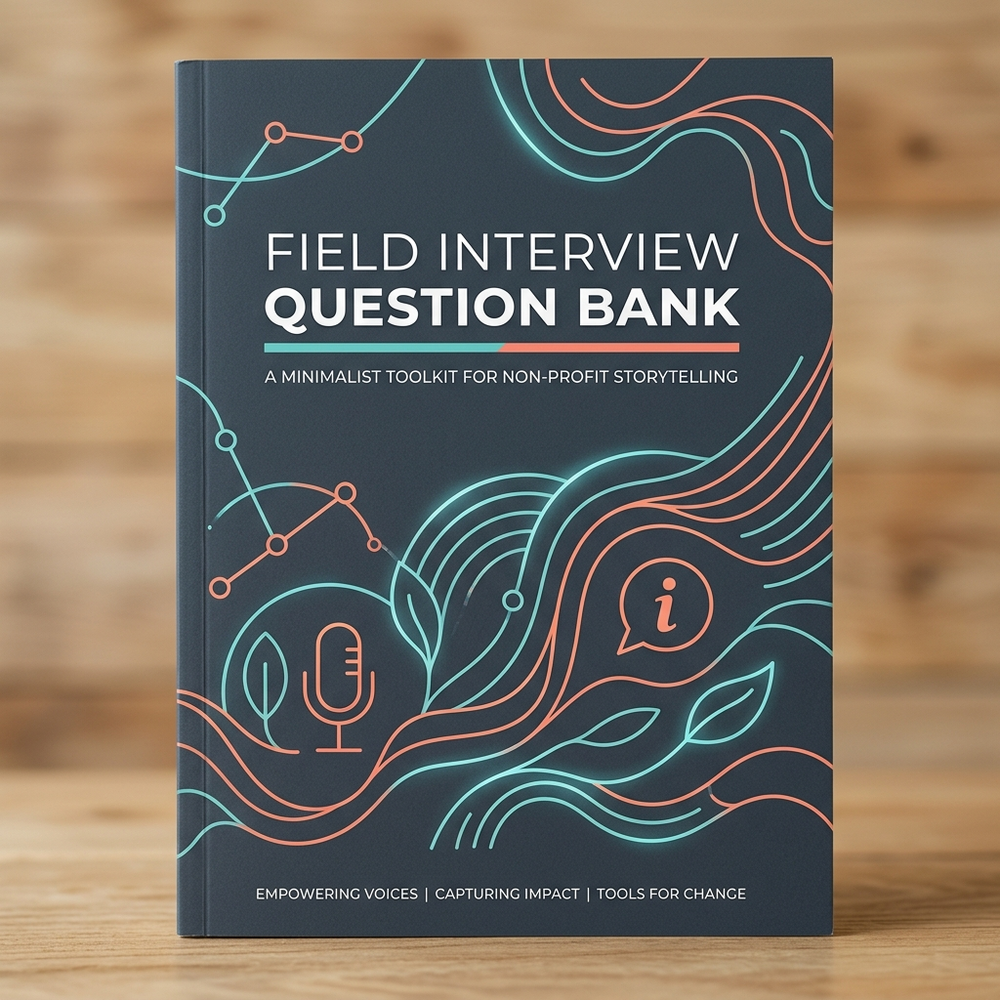
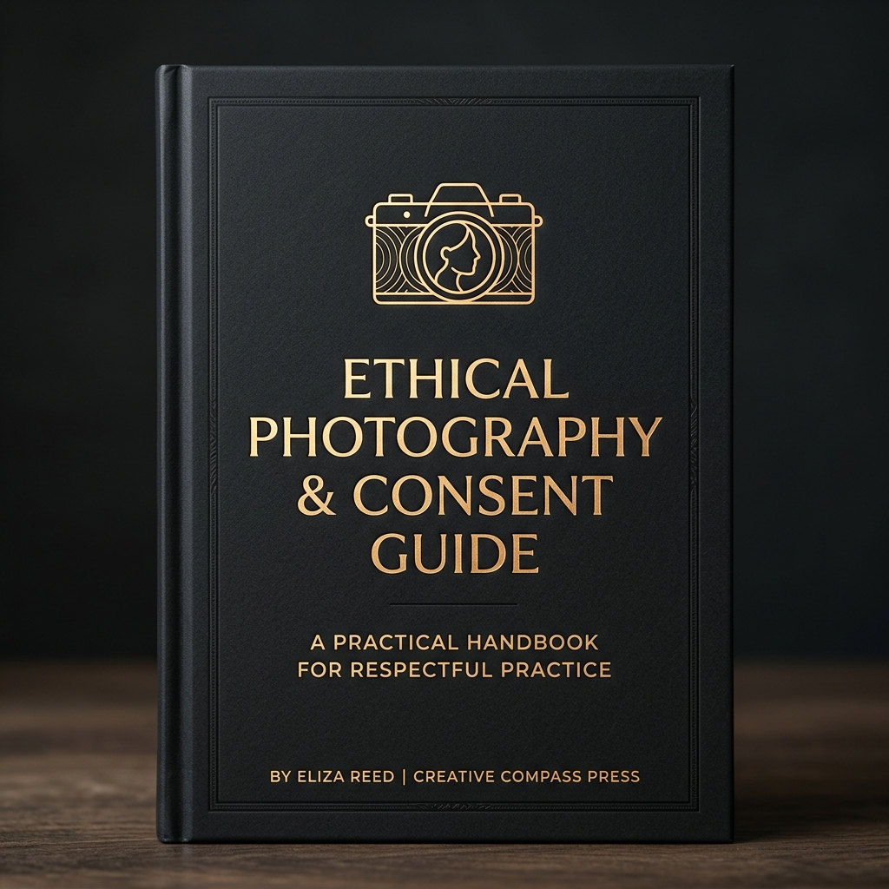

Ten practical tools for stronger storytelling, planning, reporting and communication—no email gate, no strings.

GuideHow to document programmes in a way that earns continued funding.
Read the guide
TemplateA 12-month planning template built around the nonprofit funding cycle.
Download template
ChecklistThe checklist programme officers should run before signing any comms contract.
Get the checklist
TemplateA practical page-by-page framework for reports that connect outcomes to donor priorities.
Use the template
ToolkitPrompts that help programme teams gather specific, dignified and useful testimony.
Open the toolkitCheck the evidence, message, assets and approval path before your appeal goes live.
Get the checklist
GuideA field-ready guide to consent, context and visual storytelling that protects dignity.
Read the guideAlign programme, fundraising and creative teams before production begins.
Use the templatePlan evidence gathering, reporting and donor touchpoints around real funding deadlines.
Open the plannerA simple team review for consistency, usefulness, donor relevance and next actions.
Use the scorecardWe write about what mission-driven communicators actually need.